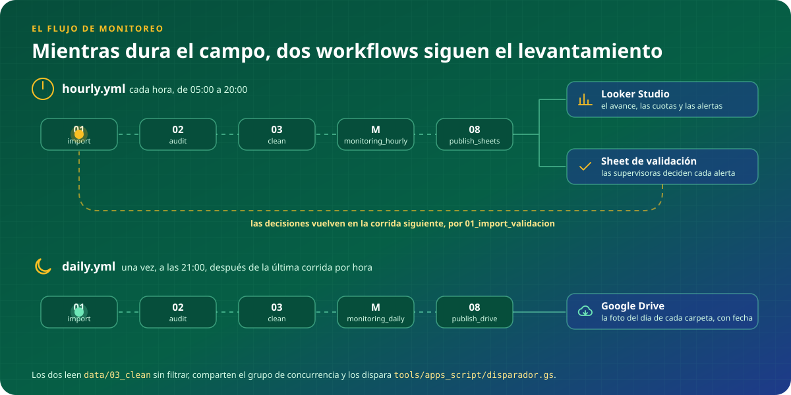

PIPELINE DE DATOS · EQUIPO
El camino de un dato
El pipeline de datos end to end: por dónde pasa, dónde queda y quién lo corre
Escanea ahora
Lo vas a usar para responder durante la presentación
Piero A. Valles-Maravi
Especialista en Investigación Cuantitativa · 04 de noviembre de 2026
LO QUE CONOCEMOS
¿Cómo llega hoy un dato al dashboard?
Importar
bajar la encuesta
→
→
→
→
Eso es real, pero es solo el monitoreo del campo: no es el pipeline completo.
LO QUE NO SE VE
¿Qué pasa con los datos cuando termina el campo?
LO QUE CONOCEMOS
Importar
Auditar
Limpiar
Sheets
Dashboard
LO QUE TAMBIÉN PASA
Enriquecer
sumar lo que falta saber
Integrar
unir fuentes y rondas
Calcular
indicadores e índices
Analizar
tablas, figuras, informes
Entregar
al cliente, a Drive
Lo que vemos en el dashboard es la última milla. Antes, otras etapas convierten datos en resultados.
EL PROCESO DE UN VISTAZO
Si fueran cuatro palabras, ¿cuáles serían?
BLOQUE 1
Ingesta
Se traen los datos de cada fuente, tal cual llegan.
BLOQUE 2
Procesar
Se revisan, limpian y preparan hasta la base final.
BLOQUE 3
Producir
Se arma lo que se entrega a una persona.
BLOQUE 4
Publicar
Se lleva cada cosa a su destino. No se calcula nada.
Todo proyecto, de una encuesta o de diez fuentes, pasa por estos cuatro bloques.
EL PROCESO DE UN VISTAZO · DOS COSAS DISTINTAS
¿El pipeline y el workflow son lo mismo?
El pipeline dice qué se le hace al dato; el workflow dice cuándo corre y qué parte del pipeline.
El pipelinesrc/

Ocho etapas, un script cada una. Es el mismo en todos los proyectos.
Los workflows.github/workflows/

hourly.yml y daily.yml corren una parte durante el campo; completo.yml, todo al cierre.
DENTRO DE LOS CUATRO BLOQUES
¿Por qué separar en tantas etapas?
Porque cada etapa responde una pregunta. Si una falla, sabemos cuál fue y la volvemos a correr sola.
| # | ETAPA | LA PREGUNTA QUE RESPONDE | BLOQUE |
|---|
| 01 | import | ¿Qué llegó? | Ingesta |
| 02 | audit | ¿Es confiable? | Procesar |
| 03 | clean | ¿Está bien escrito? | Procesar |
| 04 | enrich | ¿Qué le falta saber? | Procesar |
| 05 | integrate | ¿Quién es quién? | Procesar |
| 06 | indicators | ¿Qué mide? | Procesar |
| 07 | analysis | ¿Qué le entregamos a una persona? | Producir |
| 08 | publish | ¿Dónde lo encuentran? | Publicar |
BLOQUE 1 · INGESTA · 01 IMPORT
¿Qué llegó?
Qué es: traer los datos de cada fuente a data/01_raw, un script por fuente.
Al importar no se corrige nada: lo que llega mal tiene que quedar a la vista.
…pero ¿cómo entra el script a SurveyCTO o a Drive sin pedirle la contraseña a nadie?
La encuesta
SurveyCTO, por la API
Un registro
un Sheet, una base, un archivo
Las supervisoras
sus decisiones son una fuente más
→
LA CARPETA DE LA ETAPA
data/01_raw/ronda_1/
EL NOMBRE DEL ARCHIVO SE ARMA SOLO
proyecto_
ronda_1_
scto_raw
.RData
.sav
.dta
.xlsx
.csv
Sheet
DOS PROYECTOS REALES
SENCILLOEMCESA · campo1 fuente · 1 script
SurveyCTOla encuesta, por la API
→
01_importar.R
→
data/01_raw/
COMPLEJOTigo · Jóvenes Conectados7 fuentes · 9 scripts · 4 formas de llegar
Google SheetsMEC 2025 · MEC 2026 · RCE
APIsSurveyCTO (RCA) · Amplify (ROF) · Coursera, con Python
Base de datosChatwoot: 7 tablas de PostgreSQL
Driveel clean congelado de las fuentes que ya no cambian
En los dos, la misma regla: un script por fuente, y nada se corrige al importar.
BLOQUE 1 · INGESTA · ANTES DE EMPEZAR
¿Con qué llave abre el pipeline cada puerta?
Ninguna contraseña ni ID se escribe en un script. Cada llave vive en un solo lugar, con el mismo nombre en tu computadora y en GitHub.
| PIEZA | QUÉ ES | DÓNDE VIVE | CÓMO SE USA |
|---|
| .Renviron | La lista de llaves del proyecto: usuarios, contraseñas, ids de Sheets y de Drive | .secrets/.Renviron, nunca en git | Se copia de .Renviron.example y se lee con env_requerido() |
| cuenta de servicio | Un usuario robot de Google que entra a Sheets y Drive sin que nadie inicie sesión | .secrets/, su clave .json | Cada Sheet y carpeta de Drive se comparte con su correo |
| secrets de GitHub | Las mismas llaves, para cuando el pipeline corre solo | Settings → Secrets del repo | Con el mismo nombre que en el .Renviron |
| config.R | Lo que no es secreto: el nombre del proyecto y la ronda | src/00_setup/config.R, sí en git | Se edita al empezar el proyecto o al cambiar de ronda |
PARA EMPEZAR BIEN
✓Copiar .Renviron.example y completarlo
✓Dejar la clave .json en .secrets/
✓Compartir Sheets y Drive con la cuenta
✓Cargar los secrets en GitHub
✓Editar config.R
BLOQUE 2 · PROCESAR · 02 AUDIT
¿Es confiable?
Qué es: revisar cada registro contra reglas de calidad y marcar lo que no las cumple.
Auditar es marcar, no corregir: cada registro sale con una variable que dice si tiene una alerta y por qué.
1 Se marca: nada se borra ni se cambia acá.
2 Las alertas pasan a validación humana.
3 La decisión vuelve al pipeline como una fuente más.
Encuesta 1.042
ronda_1 · encuestador 07
Edad150Validez
SexoMujerCompletitud
DistritoAsunciónValidez
Duración14 minProtocolo
Teléfono0981 123 456Consistencia
IngresoNS/NRNo sustantiva
alerta
1
la edad está fuera de rango
pasa a validación
Ejemplo ilustrativo: cada proyecto define sus reglas.
BLOQUE 2 · PROCESAR · 03 CLEAN
¿Está bien escrito?
Qué es: dejar usable una fuente a la vez: corregir, normalizar, recategorizar y etiquetar.
Tres pasos siempre en el mismo orden, y el valor original nunca se pierde.
PASO 1
Aplicar correcciones
PASO 3
Limpiar
normalizar · recategorizar · etiquetar
| ANTES | | DESPUÉS |
|---|
| " juan PÉREZ " | → | JUAN PEREZ |
| 0981-123 456 | → | +595981123456 |
| otro: albañil | → | Construcción |
| edad = 150 | → | edad = 50 (corregida, motivo anotado) |
El valor original queda en una columna _orig: siempre se puede volver atrás.
BLOQUE 2 · PROCESAR · 04 ENRICH
◌ solo en algunos proyectos
¿Qué más podemos sacar de cada registro?
Qué es: agregar columnas nuevas a la base procesando lo que cada registro ya trae, casi siempre con IA.
La IA lee por nosotros, pero solo lo nuevo: lo ya enriquecido no se vuelve a pagar.
Cuándo aparece: cuando cada registro trae algo que hay que leer o interpretar: los TDR de una licitación, una respuesta abierta, un documento adjunto.
EL CASO DE LICITACIONES
UN REGISTRO
Convocatoria SEACE
CONV-PROC-62-2026
el TDR adjunto,
40 páginas
COLUMNAS NUEVAS EN LA BASE
ai_budgetUSD 85.000
ai_duracion_meses6
ai_sector_equilibriumDesarrollo social
ai_requiere_campoSí
ai_elig_score0 / 10
… y unas 40 columnas más, con una justificación de la nota
DOS PREGUNTAS A LA IA
Extraer: ¿qué dice el documento? Sin juzgar.
Evaluar: ¿nos conviene? Una nota de 0 a 10.
EL HISTORIAL
0 nuevas de 1.248: las demás ya estaban enriquecidas y no se vuelven a procesar.
Ejemplo ilustrativo, basado en el proyecto de scraping de licitaciones: los valores no son de una convocatoria real.
BLOQUE 2 · PROCESAR · 05 INTEGRATE
◌ solo en algunos proyectos
¿Quién es quién?
Qué es: unir todas las fuentes y rondas en una sola base, con llaves que conectan cada tabla.
Cada persona, territorio o entidad aparece una sola vez, aunque venga de diez fuentes.
Cuándo aparece: cuando hay más de una fuente o más de una ronda, por ejemplo datos tradicionales y no tradicionales sobre los mismos territorios.
EJEMPLO 1 · TIGO: LA BASE MAESTRA DE PERSONAS
MEC 202550.254 filas
MEC 202643.613 filas
ROF30.263 filas
RCE13.354 filas
RCA10.339 filas
Coursera36.673 filas
Ninguna fuente tiene todas las llaves: cada registro aporta las que tiene y se conecta con otro por cualquiera que compartan.
MEC 2026cédula 4.512.345
ROFcédula 4.512.345correo ana.g@…celular 0981…
Courseracorreo ana.g@…
RCEcelular 0981…
cédula
correo
celular
UNA PERSONA · P-0001
Cada grupo conectado es una persona. El nombre no une: un homónimo fusionaría a dos personas distintas, y esa fusión no se puede deshacer.
Ejemplo 1 de 2 · → para el modelo estrella
EJEMPLO 2 · UN SCORE DE VIOLENCIA: EL MODELO ESTRELLA
TERRITORIO
id_municipio
departamento · población · urbano/rural
TIEMPO
id_mes
mes · trimestre · año
DATOS TRADICIONALES
encuesta de hogares · denuncias policiales · registros de salud
DATOS NO TRADICIONALES
menciones en redes · búsquedas en Google · noticias
TABLA DE HECHOS
un municipio en un mes
id_municipio · id_mes
denuncias · menciones
score_violencia
Las dimensiones describen: dónde, cuándo y de qué fuente. Cada una se guarda una sola vez.
El hecho junta las medidas con las llaves de cada dimensión. Ahí se calcula el score.
Ejemplos ilustrativos, con valores inventados: la base maestra de Tigo y un modelo estrella inspirado en el violence score de UNICEF.
BLOQUE 2 · PROCESAR · 06 INDICATORS
◌ solo en algunos proyectos
¿Qué mide?
Qué es: construir las variables, indicadores e índices del proyecto sobre la base integrada.
Se calculan una sola vez y dejan la base final: de ahí en adelante, todos leen de ella.
Cuándo aparece: cuando el proyecto construye índices o indicadores. Si no, la base limpia ya es la base final.
tiene_internet
usa_celular
cursos_completos
horas_conexion
↓
UN INDICADOR
Índice de inclusión digital
data/06_final/proyecto_final
La frontera
De acá en adelante, todos leen solo de 06_final.
No todos los proyectos usan 04, 05 y 06, pero cuando aparezcan ya sabes dónde van.
BLOQUE 3 · PRODUCIR · 07 ANALYSIS
¿Dónde va lo que nos piden?
Qué es: producir todo lo que se entrega a una persona: tablas, figuras, informes y listas.
El código va en src/07_analysis/ y lo que produce, en outputs/07_analysis/: un script y una carpeta por producto.
tablasfigurasinformes Quarto, Word, PDFlistastablas del dashboard
EL CÓDIGO
src/07_analysis/
un script por producto · se sube a git
LO QUE PRODUCE
outputs/07_analysis/
una carpeta por producto · no se sube a git
07_analysis_dashboard.R
07_analysis_reporte_trimestral.R
07_analysis_inconsistencias.R
07_analysis_cursos.R
dashboard/tablas .xlsx
reporte_trimestral/informe .docx
inconsistencias/Quarto .html
cursos/tabla .xlsx, figuras .png
El caso Tigo: lo que antes estaba suelto, ordenado en scripts y carpetas.
BLOQUE 4 · PUBLICAR · 08 PUBLISH
¿Dónde lo encuentran?
Qué es: llevar cada cosa a su destino: Sheets, Drive, el cliente o una página web.
Publicar no calcula nada: solo lleva lo que ya está hecho.
LOS DESTINOS
Sheets → dashboard
08_publish_sheets.R
Drive, con fecha
08_publish_drive.R
El cliente
08_publish_entrega.R · SFTP
Una página web
GitHub Pages
¿DÓNDE VA UN PEDIDO NUEVO?
¿Revisa la calidad de una sola fuente?
02 audit
¿Calcula o arma algo para una persona?
07 analysis
¿Mira el campo mientras ocurre?
monitoring
¿Solo lleva algo ya hecho a su destino?
08 publish
BLOQUE 4 · PUBLICAR · LOOKER VS HTML
¿Looker ha muerto?
No: Looker sirve para mirar el día a día; una página HTML, para contar una historia con nuestra marca. Ninguna de las dos calcula.
| LOOKER STUDIO | PÁGINA HTML · tools/dashboard/ |
|---|
| Para qué | el monitoreo y el avance, todos los días | resultados para el cliente, informes interactivos |
| Lee de | un Google Sheet que escribe 08_publish_sheets | los CSV que exporta el pipeline a tools/dashboard/datos/ |
| Diseño | el de Looker | la línea gráfica de la marca |
| Cuesta armarla | poco: se arma arrastrando gráficos | mucho: consume muchos tokens, porque se diseña con Claude Design |
| Se publica en | el link de Looker, con los permisos de la cuenta de Google | GitHub Pages, con el repo público; si no, un servidor propio |
| Ejemplo | el avance diario de un levantamiento: encuestas por día, cuotas y alertas por encuestador | US-PY Engagement Index · lvisalotequi.github.io/Paraguay_Index |
GITHUB PAGES EN TRES PASOS
tools/ una carpeta del repo
→
dashboard.yml la publica sola
→
un link · esta presentación es una
MIENTRAS DURA EL CAMPO
¿Cómo va el campo?
Qué es: medir el levantamiento mientras ocurre. Después de limpiar, el dato va directo al dashboard.
El monitoreo no es una etapa: es el atajo del campo.
NO ES LO MISMO
Pipelinelos scripts de src/: qué se le hace al dato
Workflowun archivo de .github/workflows/: cuándo corre y qué parte del pipeline
EL CAMINO DEL DATO DURANTE EL CAMPO
01import
02audit
03clean
◷monitoreo
08publish
DashboardLooker o HTML
SE SALTA
04 enrich
05 integrate
06 indicators
07 analysis
monitoring_hourly.R
workflow: hourly.yml
Cada hora
Las tablas del campo salen de data/03_clean y alimentan el dashboard: en Looker (por un Sheet) o en HTML (por CSV).
monitoring_daily.R
workflow: daily.yml
Al cierre del día
El resumen de la jornada y el respaldo de cada base en Drive, con la fecha en el nombre.
EL RESPALDO DIARIO, EN VARIOS FORMATOS
.RData.sav.dta.xlsx.csv
Se prefiere .RData: guarda los metadatos (tipos de columna, etiquetas, fechas) que un .csv o un .xlsx pierden.
MIENTRAS DURA EL CAMPO · AUTOMATIZACIÓN
¿Quién aprieta el botón?
Nadie corre scripts a mano. Hay tres formas de automatizar: si una falla, se sube un escalón.
OPCIÓN 1 · LO MÁS SIMPLE
GitHub Actions con cron
El horario vive en el propio workflow y corre en GitHub.
GratisEl cron de GitHub se atrasa o salta corridas en repos con poca actividad
si falla→
OPCIÓN 2 · LA DE ESTE BLUEPRINT
Apps Script dispara, Actions corre
Un Apps Script hace de reloj y lanza el workflow. El pipeline sigue corriendo en GitHub Actions.
GratisDepende de que GitHub Actions esté disponible
si falla→
OPCIÓN 3 · TODO EN GOOGLE CLOUD
Cloud Scheduler + Cloud Run Jobs
Google dispara y corre el pipeline. Requiere:
una cuenta de serviciobilling activado
≈ 3–4 USD al mes
CUÁNTO CUESTA LA OPCIÓN 3 · EL CASO DE LICITACIONES
| Cloud Run Jobs 1 corrida diaria de ~30 min, 2 vCPU y 4 GiB | ≈ 2,4 USD |
| Cloud Build reconstruye la imagen en cada push, ~0,15 USD cada vez | ≈ 0,8 USD |
| Storage, Artifact Registry y Scheduler | < 0,3 USD |
| Total, sin costos de IA | ≈ 3–4 USD |
Estimación con precios de lista de Google Cloud; cambia con la región, la duración real de cada corrida y la capa gratuita.
UN DÍA DE CAMPO
05:00 a 20:00 · por hora: 01 → 03 → monitoreo → 08, dashboard
21:00 · diario: 01 → 03 → monitoreo → 08, Drive
Cierre del campo · completo: 01 → 08, a mano
EL BLUEPRINT · 1 DE 3
¿Hay que armar todo esto en cada proyecto?
No: todo lo que vimos ya existe en un repo plantilla. Se clona y se empieza.
EL REPO PLANTILLA
dataops-blueprint
github.com/piero-valles-maravi/dataops-blueprint
Use this templatelicencia MIT
Un proyecto nuevo nace de un clic: el repo se copia entero, con su estructura, sus scripts y sus workflows.
8etapas, con su carpeta en src/ y en data/
21scripts de ejemplo, listos para adaptar
4workflows: por hora, diario, completo y el dashboard
7skills: cómo se hace cada tarea
Y YA VIENE ARMADO
funciones comunes: guardar_etapa(), env_requerido()el dashboard HTMLel disparador de Apps Scriptesta presentación
EL BLUEPRINT · 2 DE 3
¿Dónde va cada cosa?
El número de la etapa es el mismo en src/, data/ y outputs/: cada script escribe solo en su carpeta.
EL CÓDIGO · src/LO QUE ESCRIBE
01_import/→data/01_raw/
02_audit/→data/02_audit/
03_clean/→data/03_clean/
04_enrich/→data/04_enrich/
05_integrate/→data/05_integrate/
06_indicators/→data/06_final/
07_analysis/→outputs/07_analysis/
08_publish/→outputs/08_publish/ · Sheets · Drive
monitoring/→outputs/monitoring/
Y ADEMÁS
sources/lo que entra a mano: instrumento, referencias, correcciones, plantillas
.github/workflows/cuándo corre cada parte del pipeline
tools/el dashboard, el Apps Script y esta presentación
.secrets/las llaves: nunca se suben a git
.claude/el contexto del proyecto y las skills
EL BLUEPRINT · 3 DE 3 · LAS SKILLS
¿Cómo sabe Claude cómo trabajamos?
Las skills son las reglas del equipo, escritas una vez: Claude las lee antes de cada tarea, y una persona nueva también.
CLAUDE.mdel índice: qué skill leer para cada tarea
↓
.claude/skills/cómo se hace cada tarea, paso a paso
↓
CONTEXTO_PROYECTO.mdel estado del proyecto y su bitácora; se actualiza al terminar cada tarea
skill_project_structure.mddónde va cada script, carpeta o archivo
skill_code_style.mdantes de escribir o editar un script de R
skill_audit.mdantes de escribir 02_audit o una alerta
skill_data_cleaning.mdantes de limpiar o normalizar una fuente
skill_readme.mdantes de escribir el README y su banner
skill_linea_grafica_equilibrium.mdantes de cualquier entregable con la marca
skill_linea_grafica_global_americans.mdpara la marca Global Americans
ANTES DE EMPEZAR
¿Qué hago el primer día de un proyecto?
Ningún proyecto empieza de cero: se clona el blueprint, se poda y se configura antes de escribir código.
dataops-blueprint/github.com/piero-valles-maravi/dataops-blueprint
.claude/el contexto del proyecto y las skills
sources/instrumento, referencias, correcciones, plantillas
src/00_setup y un script por etapa, de 01 a 08
data/lo que escribe cada etapa, de 01_raw a 06_final
outputs/lo que se entrega: analysis, publish, monitoreo
tools/dashboard, Apps Script, esta presentación
.github/los workflows: por hora, diario, completo
.secrets/las claves: nunca se suben a git
LO QUE SE DECIDE AL INICIO
- Clonar con Use this templateel repo se llama pipeline_<proyecto>
- Configurar config.Rel nombre del proyecto y la ronda; es lo único que cambia entre rondas
- Borrar las etapas que no se usanlas demás conservan su número
- Dejar las credenciales.Renviron en local y los mismos secrets en GitHub
- Completar CONTEXTO_PROYECTO.mdpara que Claude conozca el proyecto
LAS SKILLS: CÓMO SE HACE CADA TAREA
skill_project_structure.md
skill_code_style.md
skill_audit.md
skill_data_cleaning.md
skill_readme.md
skill_linea_grafica_equilibrium.md
skill_linea_grafica_global_americans.md
LO QUE NOS LLEVAMOS
El dashboard es la última milla. Antes, el dato pasa por 8 etapas y cada una responde una pregunta.
02 – 06
Procesar
¿Es confiable y usable?
07
Producir
¿Qué se le entrega a una persona?
08
Publicar
¿Dónde lo encuentran?
El repositorio y el explorador
github.com/piero-valles-maravi/dataops-blueprint
APLICACIÓN PRÁCTICA
Ahora les toca construir
La primera plantilla del dashboard de monitoreo: diseñada por el equipo, hecha con el blueprint.
1Clonar el repo5 min
2Explorar la base cruda y su diccionario10 min
3Diseñar en grupos, en una ficha25 min
4Integrar las ideas y escribir el prompt15 min
5Correrlo: la primera versión10 min
APLICACIÓN PRÁCTICA · PASOS 1 Y 2
¿Con qué vamos a trabajar?
La base viene sucia a propósito: antes de diseñar el dashboard, hay que saber qué puede salir mal en el campo.
1CLONAR EL REPO
$ git clone https://github.com/piero-valles-maravi/dataops-blueprint.git
o, para un proyecto nuevo, Use this template en GitHub.
2ABRIR LA CARPETA DEL TALLER
tools/presentacion/taller/
¿Cuántos problemas encuentran? Hay más de quince, de tipos distintos.
base_cruda.csv
Las encuestas tal como las exporta SurveyCTO
2.000encuestas25variables20encuestadores21días de campo
diccionario.xlsx
Lo que cada variable debería tener
variablesencuestadorescuotasdistritos
ficha_grupo.md
La ficha que llena cada grupo en el paso 3
APLICACIÓN PRÁCTICA · PASO 3 · EN GRUPOS
¿Qué debe tener sí o sí el dashboard?
Cada grupo diseña su dashboard de monitoreo en una ficha: primero la historia de cada pestaña, después los gráficos.
ficha_grupo.mdGrupo ___
1Lo que sí o sí debe tenermáximo cinco cosas: si falta una, no sirve para monitorear
2Las pestañasuna por fila:
Objetivo: qué historia cuentaQuién la mira y qué decideGráficos y tablasVariables del diccionario
3Lo que comparten todaslos filtros, cada cuánto se actualiza, cómo se muestra una alerta
4Cómo se veun boceto de la pestaña principal
PREGUNTAS PARA EMPEZAR
¿Vamos bien con las cuotas?
¿Qué encuestador necesita atención hoy?
¿Qué alertas faltan validar?
¿Podemos confiar en los datos de hoy?
APLICACIÓN PRÁCTICA · PASOS 4 Y 5
¿Quién escribe el prompt?
El equipo: junta las ideas de todos los grupos en un solo prompt, y una sola persona lo corre.
4EL PROMPT, ENTRE TODOS
Lee .claude/skills/skill_linea_grafica_equilibrium.md y el diccionario tools/presentacion/taller/diccionario.xlsx.
Crea una plantilla de dashboard de monitoreo en HTML, en tools/dashboard_monitoreo/index.html, que lea tools/presentacion/taller/base_cruda.csv.
Debe tener sí o sí: [ … ]
Las pestañas, cada una con su objetivo: [ … ]
Los filtros comunes: [ … ]
Los problemas de la base se marcan, no se borran: [ … ]
5UNO LO CORRE
Con Claude Code, en pantallael resto mira y corrige en voz alta
↓
tools/dashboard_monitoreo/la primera versión de la plantilla, en el repo
↓
skill_dashboard_monitoreo.mdlo que se acordó, escrito para el próximo proyecto